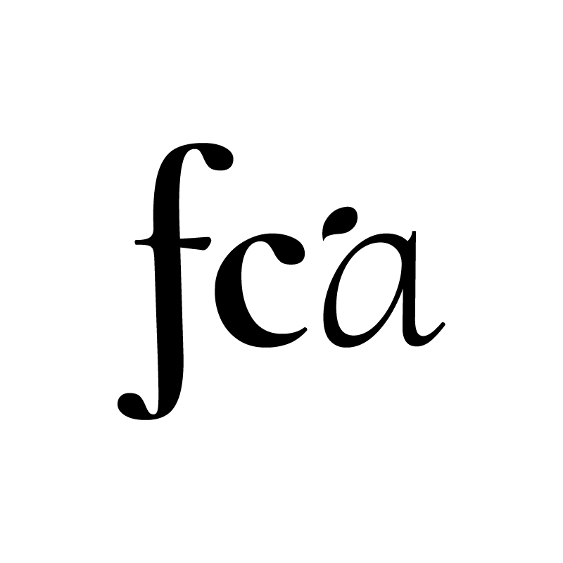
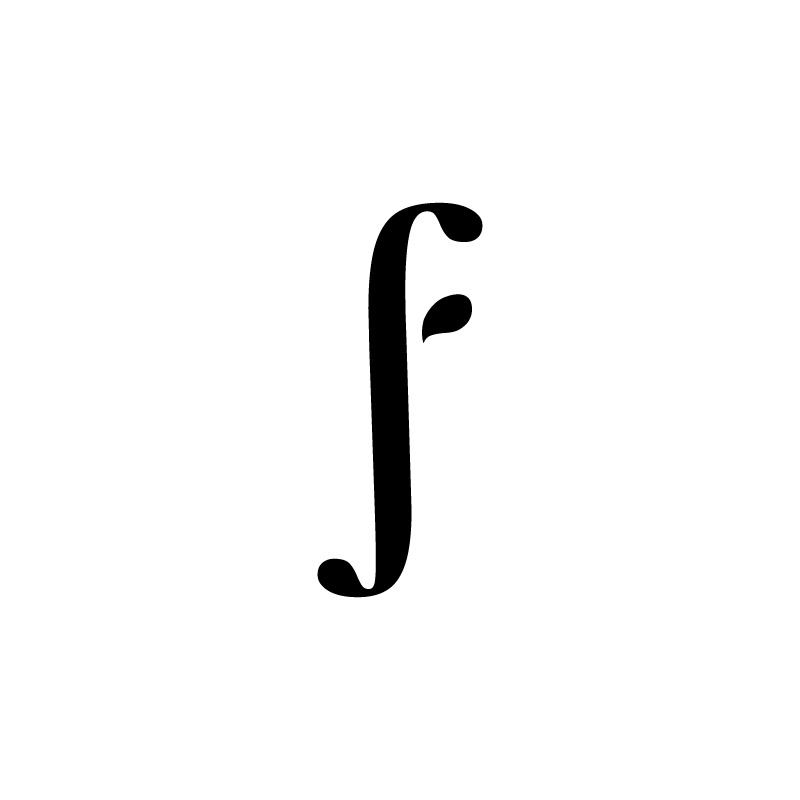
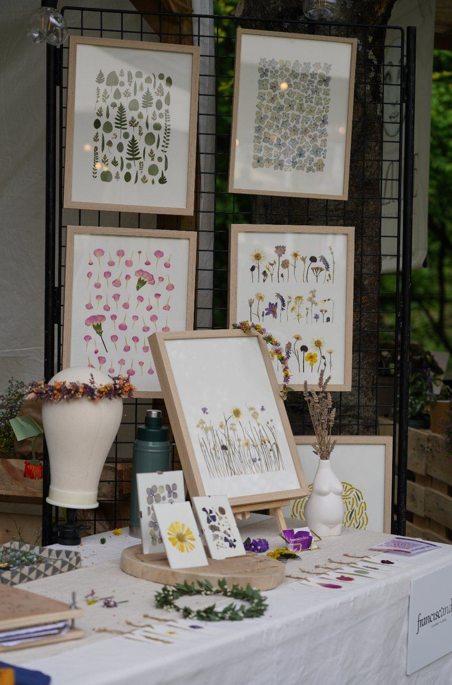
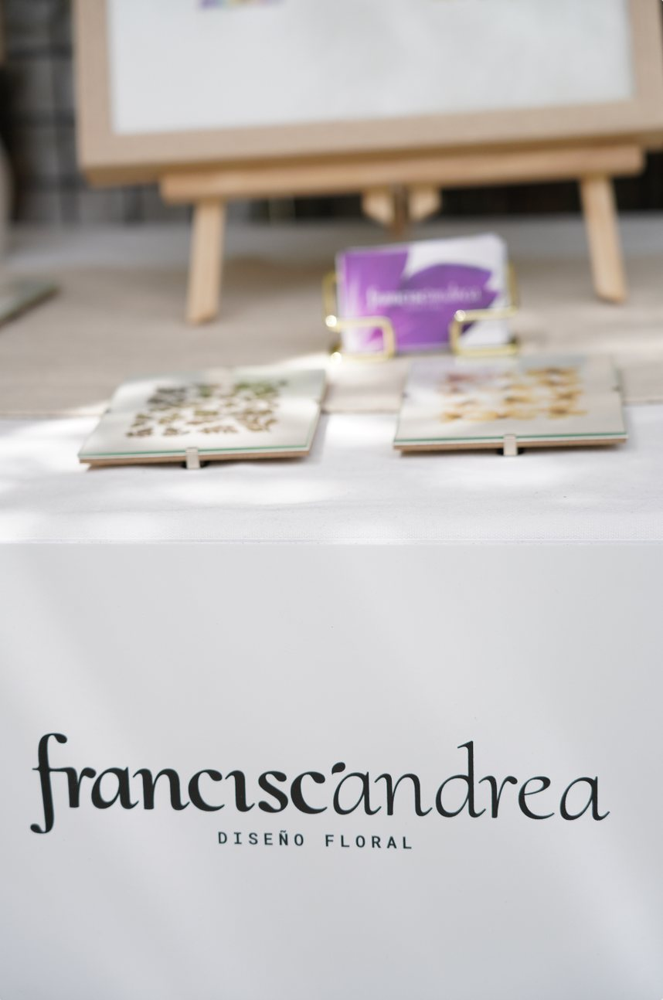
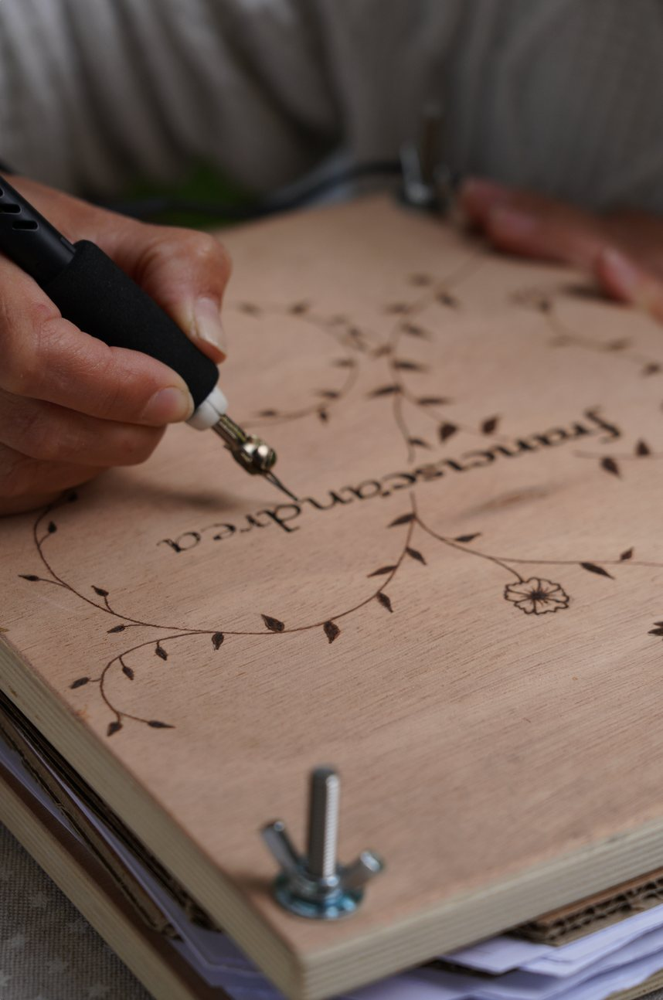
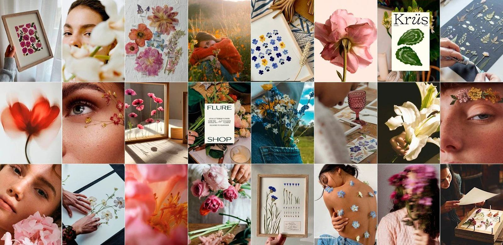
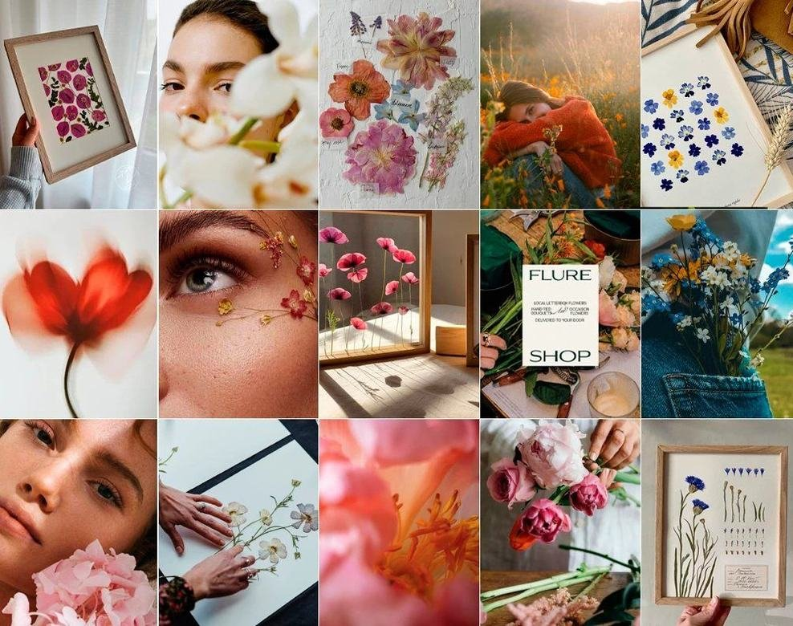
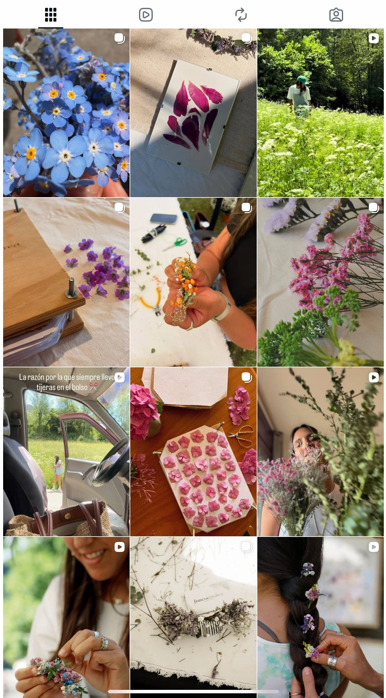
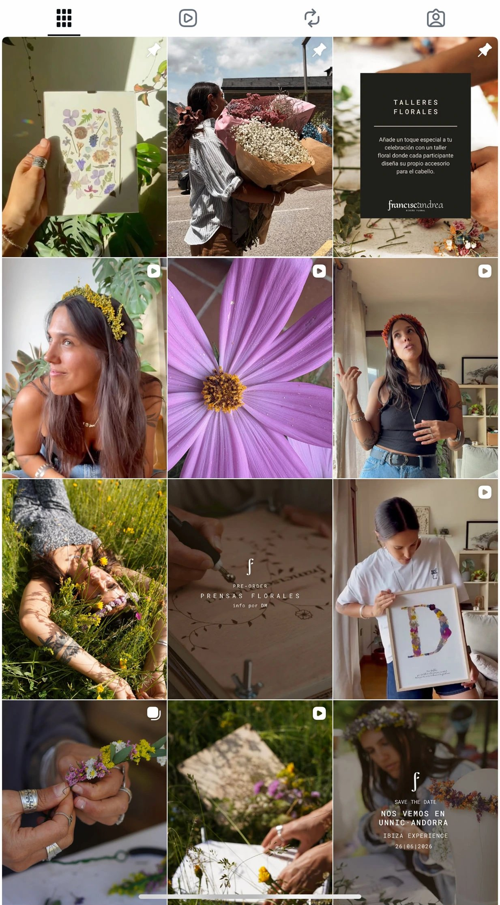

01 Intro
Just as a pressed flower may seem fragile, it can also contain a powerful presence, suspended in time.
Concept
The project is born from the contemplation of the ephemeral: that instant when a flower reaches its highest point of beauty before fading. Right there, we decided to stop time.
Visual language
The visual language also responds to this duality. The identity of francisc'andrea is built from contrast: a typography that moves between the light and the firm, reflecting the very essence of our creations.
02 logo System design
Logotype The visual identity of francisc'andrea is based on the encounter between contrast and harmony. Two names come together through a pause (the apostrophe extracted from the "f"), that does not separate, but connects. This gesture, shaped like a petal, symbolizes the instant in which the ephemeral stops and acquires permanence: the origin of the pressed flower.

Monogram (fcá). The petal, or apostrophe, becomes the core of our isotypes: first as a subtle monogram that keeps the name readable in code.

Minimal mark. As an even more abstract form, where the initial (f) and the petal-apostrophe are enough to evoke the entire visual and conceptual universe of the brand.
03 Applications
Business cards, stationery, graphics and the flower presses themselves. Mockups until the final photos arrive.



04 colors
The colours were chosen as a complement to the flowers that will appear in the brand's content. They don't seek to compete with them.
Light neutral
#ECE1D5
Light neutral
#A5A598
Dark
#20201A
Dark earth
#4B3F1B
Wine
#4E1003
Dry yellow
#BD850A
05 Art direction
The art direction I set for the brand's visual world: colour, light and the way flowers are shown.


06 Instagram today
Through my consultancy, the identity and art direction have been applied correctly on the brand's Instagram.


07 Typeface
Cormorant Upright · Roboto Mono
Type specimen
Cormorant Upright — display
Roboto Mono — text
Diseño floral
The project is born from the contemplation of the ephemeral: that instant when a flower reaches its highest point of beauty before fading.
Roboto Mono Regular · 14 / 22
Why Roboto Mono: it needed to be easy to master and available across platforms, since she would be creating her own content and wanted the system to be easy to apply.
Cormorant Upright semibold
ABCDEFGHIJKLMNÑOPQRSTUVWXYZ
abcdefghijklmnñopqrstuvwxyz 0123456789
ABCDEFGHIJKLMNÑOPQRSTUVWXYZ abcdefghijklmnñopqrstuvwxyz 0123456789 & ¿? ¡! —
08 Result & Credits
The identity is in use across business cards, stationery, graphics and the flower presses themselves, carrying the brand onto the product. Website currently in development.
- Client
- francisc'andrea
- Brand identity
- Antonia Ilic Bromberg
- Year
- 2025